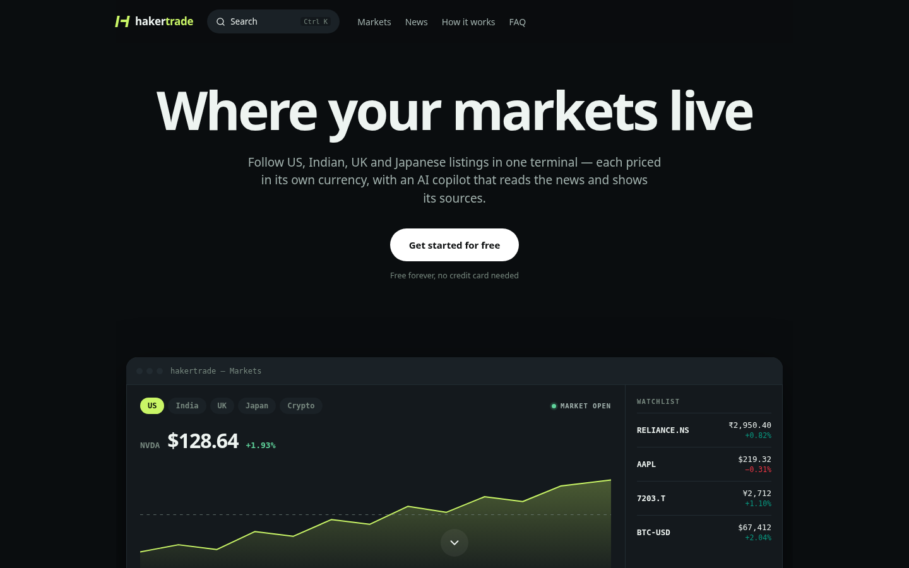

The problem
Following more than one market means six tabs: an NSE watchlist in one, a US screener in another, the news in a third, and a spreadsheet quietly doing the currency maths. Nothing tells you which market is actually open, and nothing carries your setup from one screen to the next.
What I built
A terminal covering the US, India, the UK, Japan and crypto, with every instrument priced in its own currency. A charting engine with indicators, timeframes and drawing tools. Persistent watchlists, email price alerts, four-way comparison, a market news desk on 54 wires, and an AI copilot that calls real market tools and lists the sources it used.
How I built it
The backend is a plugin kernel: market data, news, AI, auth, storage and notifications each sit behind a stable interface and are swapped by environment variable, so the same code runs against live feeds or an illustrative dataset. The frontend is a thin React client that only asks for ready-made JSON. Alerts run on a scheduled Cloudflare Worker that renders and sends the email, so the API never holds mail credentials.
Key decisions
- Put the hard part on the server. The frontend never talks to a data provider, so swapping one is a config change rather than a client rewrite.
- Charts use TradingView's open-source lightweight-charts rather than a hand-rolled SVG, and every indicator is computed in the browser — no server cost, and more of them on the free tier than the paid product this competes with.
- Drawings are stored as time and price, never pixels, so a line drawn at a level still sits at that level after a zoom, a pan or a reload.
- Split email from the API. The worker owns the message; the backend owns the data. Neither holds the other's secrets.
- The alert scheduler only runs when somebody has an alert armed, so an idle account does not keep the backend awake all night.
Result
Live, with 27 indexable public pages, a plugin architecture that swaps every external dependency, and a charting engine that covers indicators, drawing tools and export — built and shipped solo.